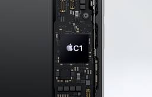
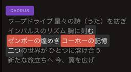

テクノエッジ TechnoEdge
https://www.techno-edge.net/
テックメディア TechnoEdge (テクノエッジ)公式サイトです。サイエンスから最新ガジェット、サービスやコンテンツまで、最前線のニュースとレビュー、コラムをお届けします。
フィード

iPhone 16eで初搭載のアップル独自モデム、1.5GHz帯非対応でも大丈夫なのか（石野純也） 1
1
テクノエッジ TechnoEdge
アップルは、2月20日にiPhone 16シリーズの廉価版とも言える「iPhone 16e」を発表しました。
3時間前
三つ折りだから立体映像も楽しめる！ Mate XT Ultimate Designを体験スペースで納得いくまで触ってきた（スマホ沼）
テクノエッジ TechnoEdge
ファーウェイが発表した三つ折りスマホ「Mate XT Ultimate Design」を体験できるスペースがマレーシアで開催。製品の利便性やデモが紹介された。今後日本でも同様のイベント開催を期待。
8時間前
昔のホームビデオ、全部これで変換したいぞ。Topaz Video AIのDiffusionモデル「Project Starlight」のAI修復が効果抜群なので即課金した（CloseBox） 116
テクノエッジ TechnoEdge
Topaz Video AIの新機能「Project Starlight」は、古いビデオを高品質に修復する優れたDiffusionモデルを採用。ユーザーは無料で試せ、ディテールが鮮明に再現される。
14時間前
速報記事を書くならNotebookLM Plusが便利（Google Tales） 5
テクノエッジ TechnoEdge
それにしても、ほぼ毎日AI関連のニュースが届きますね。私は普段、海外（主に米国）のIT系ニュースの速報をお届けする仕事をしているんですが、最近ではAI関連の速報を書かない日はほとんどありません。
16時間前
iPhone 16e 発表。9万9800円からの最安・最新世代 iPhone、Apple C1チップ初搭載で無印16超の長時間駆動
テクノエッジ TechnoEdge
Appleが廉価版 iPhoneの新製品、iPhone SE (第4世代)を発表しました。
17時間前
“世界最薄”折りたたみスマホ「OPPO Find N5」がアップルのアレよりキニナル（スマホ沼）
テクノエッジ TechnoEdge
OPPOは2月18日19時（現地時間）、シンガポールで新製品発表会を開催します。今回発表されるモデルは折りたたみスマートフォンの最新機種「Find N5」です。
1日前
三つ折りスマホ「Mate XT Ultimate Design」グローバル版を店頭でチェック！ グーグル入ってる？（スマホ沼） 1
テクノエッジ TechnoEdge
ファーウェイの三つ折りスマホ「Mate XT Ultimate Design」がグローバルデビュー。価格は約56万円で、アジア各国で先行販売される可能性があり、日本市場への展開も期待されている。
1日前

SunoのAI編集機能がDAW不要に？ Aメロ、サビなどの構造認識し部分置換・フェードアウトも超簡単（CloseBox） 8
テクノエッジ TechnoEdge
Suno、Udio、Riffusion、そして最近ではYuEというオープンソースソフトも登場してきたAI作曲ソフトですが、完成形を作るのには向いていても、部分的な修正は苦手です。その状況がいい方に変わってきました。
1日前
MapQuest、メキシコ湾を好きな名前に変えられる地図ページを公開 37
テクノエッジ TechnoEdge
米国のオンライン地図サービスMapQuestは「メキシコ湾」を「アメリカ湾」に変更するというトランプ大統領令を揶揄し、好きな名前を付けて表示できる地図ページを公開しました。
1日前
QR決済に対応、電車にも乗れるリストバンド「HUAWEI Band 10」が登場 2
テクノエッジ TechnoEdge
ファーウェイが発表した「HUAWEI Band 10」はQR決済に対応し、日本でも発売予定。約100種類の運動に対応し、最大14日間バッテリー持続。低価格で便利なウェアラブルデバイスです。
1日前
Galaxy Ringで、健康以外の利用価値を考える（石野純也）
テクノエッジ TechnoEdge
Galaxyシリーズ初の指輪型デバイスとして注目を集めている「Galaxy Ring」が、ついに日本に上陸しました。
2日前
USBメモリーの元祖!？ 直接USBに挿せるフラッシュメモリードライブ「ThumbDrive」（8～512MB、2000年頃～）：ロストメモリーズ File042
23
テクノエッジ TechnoEdge
「ThumbDrive」は、2000年頃に登場したUSB接続のフラッシュメモリー。直接PCのUSBに差し込んで使える手軽さが特徴だが、ドライバーが必要で高価だったため、広くは普及しなかった。メジャーにはなれなかったが、USBメモリーの元祖といえる。
2日前
画面に光が写り込まないHUAWEI MatePad Proに惚れた話（日本で出してお願い） 2
テクノエッジ TechnoEdge
ファーウェイが2025年2月18日にマレーシアで開催したグローバル向け新製品発表イベントで、新タブレット「HUAWEI MatePad Pro 13.2」を披露しました。
2日前
GPT-4oより高性能うたう「Grok 3」マスク氏のxAIがリリース。ウェブ版とiOSアプリ版で提供 11
テクノエッジ TechnoEdge
xAIが、同社の主力AIモデルの最新バージョン「Grok 3」をリリースしました。
2日前
軽量スマートリングRingConn 2がクラファン開始、早割3万円台から。睡眠・運動・心拍等を常時記録で10日間超バッテリー、サブスク不要
テクノエッジ TechnoEdge
睡眠や運動、心拍など各種バイタルデータを24時間計測するスマートリング、RingConn (第2世代モデル)が国内向けクラウドファンディングを開始しました。
2日前
生成AIグラビアをグラビアカメラマンが作るとどうなる？第42回：ちょっと変わった生成AI画像、Google WhiskとFlux Sigma Vision Alpha1（西川和久） 3
テクノエッジ TechnoEdge
Google Whisk
2日前
クアラルンプールの街を三つ折りがジャック！ ファーウェイ「Mate XT Ultimate Design」いよいよ世界へ（スマホ沼）
テクノエッジ TechnoEdge
ファーウェイが初の三つ折りスマホ「Mate XT Ultimate Design」のグローバル発売がまもなくクアラルンプールで開催される。世界中の多くのメディアが注目している。
3日前
au INFOBARが体重計に転生。乗るだけスマートバスマット体組成計にデザインケータイ コラボモデル、マット単品も用意 2
テクノエッジ TechnoEdge
2003年発売の au デザインケータイ『INFOBAR』が、なぜかスマート体組成計に生まれ変わりました。
3日前
格安SIMフリースマホ Blackview Wave 8C が36％オフセールで約1万円。画面占有率89％の6.5インチ、Android 14 Go搭載 1
テクノエッジ TechnoEdge
高コスパなスマホやタブレットで知られるBlackviewが、Amazonで格安スマホ Blackview Wave8C が約1万円で買える大幅値引きセールを開始しました。
3日前
生成AIグラビアの作り方教えます。グラビアカメラマンが教える、生成AIグラビア実践Stable Diffusionワークショップ（第3期第4回）を2月19日開催。テクノエッジ アルファ会員なら無料 2
テクノエッジ TechnoEdge
人気連載「生成AIグラビアをグラビアカメラマンが作るとどうなる？」の著者である西川和久さんを講師に迎えた、生成AIグラビアワークショップの第3期第4回を2月19日に開催いたします。
3日前
OpanAI「o3」が国際情報オリンピックで金メダル達成（18位相当）。競技プログラミングにおいて人間のトップ選手と同等レベル（生成AIクローズアップ） 5
テクノエッジ TechnoEdge
コーディングで良好な成果を示しているOpenAIの「o3」が国際情報オリンピック（IOI）で金メダルを達成した研究報告「Competitive Programming with Large Reasoning Models」に注目します。
4日前
Galaxy新モデル発売当日の韓国の様子をこの目で確認する恒例行事レポート（スマホ沼） 1
テクノエッジ TechnoEdge
Galaxy S25シリーズが韓国で発売され、予約が前モデルを上回る盛況ぶり。展示機は混雑のため見られず、地元ケースを探すも収穫なし。次回の訪問を計画中。
6日前
PerplexityがDeep Research提供開始。無料ユーザーでも1日5回、Proなら500回利用可能に。実際に試してみた（CloseBox） 257
テクノエッジ TechnoEdge
統合型チャットAIサービスであるPerplexityが新サービスをリリースしました。「Deep Research」オプションの追加です。
6日前
ポイントクラウドの夢世界を彷徨うPS5『Dreams of Another』が超楽しみ。PixelJunk EdenのアーティストBaiyon新作
テクノエッジ TechnoEdge
2月13日配信のPlayStation情報番組『State of Play』で、京都のゲームスタジオ Q-Games が新作『Dreams of Another』を発表しました。ディレクターは『PixelJunk Eden』でも知られるアーティスト Baiyon。
6日前
ワープ、ハイパードライブ、無慣性航法からアルクビエレ・ドライブまで、超光速（FTL）移動技術に関するdeep research調査報告をベッドの中から作らせた（CloseBox） 1
テクノエッジ TechnoEdge
超光速。FTL（Faster Than Light）とも呼ばれることがある、SFファンならおなじみの移動手段です。それに近い技術をどこかが開発したとか実現不可能だと分かったとか、断片的な報道がたまにされています。
6日前
（細かくてスミマセン）POCO X7 Proの元モデル「REDMI Turbo 4」もカッコいいんです（スマホ沼） 1
テクノエッジ TechnoEdge
シャオミのPOCO X7 Proが5万円以下で登場し注目を浴びており、中国ではREDMI Turbo 4として販売中。両者のスペックは同等で、バッテリー容量のみが異なる。
7日前
AppleのクックCEO、2月19日に新製品発表を予告。iPhone SE 4(仮)か新AirTagか、「家族の新しい一員」とロゴを深読みする 3
テクノエッジ TechnoEdge
Appleのティム・クックCEOが、2月19日の新製品発表を予告しました。
7日前
細かすぎて伝わらない？ Galaxy S25シリーズ搭載「One UI 7」の変更点（石野純也）
1
テクノエッジ TechnoEdge
日本では、2月14日に発売される「Galaxy S25」と「Galaxy S25 Ultra」。カメラ画質や進化したGalaxy AI、Geminiなどを使ったレビューは、各種メディアで取り上げられるようになりました。
7日前
POCO X7 Proの「アイアンマン」バージョンの作り込みがさすがすぎた（スマホ沼）
テクノエッジ TechnoEdge
シャオミの「POCO X7 Pro Limited edition Iron Man set」が海外で登場。アイアンマンとのコラボモデルで、特別なデザインやアクセサリーが付属。日本での販売も期待したい。
7日前
スカヨハ、AI生成の動画拡散され政府にディープフェイク禁止を要請 12
テクノエッジ TechnoEdge
ハリウッドスターのスカーレット・ヨハンソンは、自身の肖像を無断で使用し、カニエ・ウェストに反対するAI生成動画が拡散されていることに関し、AIの誤った使い方を制限するよう米国政府に要請しました。
8日前
アドビ、FireflyでAI動画生成スタート。「Firefly Video Model」はImage to Video、End Frameもサポートするが、月額1580円の価値はある？（CloseBox） 15
テクノエッジ TechnoEdge
アドビが2月13日、AI動画生成サービス「Firefly Video Model」を一般公開しました。1920×1080の解像度で5秒間の生成が可能。テキストプロンプトだけでなく、Start FrameとEnd FrameをサポートしたImage to Videoも使えます。
8日前
アドビ、商用可能な動画生成AIを一般提供開始。Fireflyで本人の声のまま多言語翻訳も 2
テクノエッジ TechnoEdge
アドビが生成AIアプリ Adobe Firefly の新機能と新料金プランを発表しました。
8日前
エルデンリング新作『NIGHTREIGN』5月20日発売、ゲームガイド公開。年内にDLC予告、ベータは2月14日から
テクノエッジ TechnoEdge
フロム・ソフトウェアが、人気作エルデンリングの新作『ELDEN RING NIGHTREIGN』を5月20日に発売すると発表しました。すでに予約を受け付けています。
8日前

アドビ、PDF文書と会話できるAcrobat AIアシスタント日本語版を提供。Wordやパワポも対応、月680円から
テクノエッジ TechnoEdge
Adobe が Acrobat の生成AI機能「Acrobat AIアシスタント」日本語版の提供を開始しました。
8日前
5万円でゲームもサクサクなPOCO X7 Proが国内発売（実機レビュー）
テクノエッジ TechnoEdge
シャオミのPOCOブランドから、コストパフォーマンスに優れたスマートフォン「POCO X7 Pro」が発売。6.67インチOLED、50MPカメラ、Dimensity 8400 Ultra搭載で、5万円以下から手に入る。
9日前
生成AIのせいでプログラマーの仕事はなくなる？ 「需要はむしろ増える」とティム・オライリー氏
テクノエッジ TechnoEdge
オライリーメディアの創立者ティム・オライリー氏が、同社のブログに「The End of Programming as We Know It」（私たちが知っているプログラミングの終焉）という記事を公開しました。
9日前
好きな曲を人物画に歌わせる動画生成AI「OmniHuman-1」、わずか3ドルで2BのAIモデルを72Bモデル性能以上に拡張する手法「R1-V」など生成AI技術5つを解説（生成AIウィークリー）
テクノエッジ TechnoEdge
この1週間の気になる生成AI技術・研究をいくつかピックアップして解説する「生成AIウィークリー」（第82回）では、AIが生成する映像内の不自然な動き（動作中に余分な手足が出現したり・物が体をすり抜けたりなど）を回避する動画生成AI「VideoJAM」や、歌唱を入力に人物画を歌わせることができる動画生成AI「OmniHuman-1」を取り上げます。
9日前
ソニー、PS5新作の『State of Play』2月13日朝7時から配信。各スタジオの最新情報を40分超
テクノエッジ TechnoEdge
ソニー・コンピュータエンタテインメント(SIE)は、ゲーム情報番組『State of Play』を日本時間2月13日朝7時よりライブ配信します。
9日前
久々のNothingモドキなスマートフォンはタフネス仕様も存在が謎（スマホ沼）
テクノエッジ TechnoEdge
Nothing Phoneに似たDoogeeのタフネススマートフォン「Doogee Blade GT」が登場。LEDライト機能や堅牢性を特徴にしているが、詳細なスペックは未公開。価格は約400ドル。
10日前
iPhone SE 4(仮) 発表直前まとめ。ついにホームボタン廃止とUSB-C化、中身は最新iPhone 16相当でApple Intelligence対応？
テクノエッジ TechnoEdge
ながらくうわさが続いてきた iPhone SE 4(仮)の話題。
10日前
ChatGPTがタメ口回答するようになった。AGIやってきたってこと？ deep research調査の結論は（CloseBox）
テクノエッジ TechnoEdge
ChatGPTの応答が昨日あたりからちょっとおかしいことに気づきました。馴れ馴れしすぎるのです。
10日前
GoogleのAI、国際数学オリンピックで「金メダル」を達成。人間には思いつかないエレガントな解法を出力（生成AIクローズアップ）
テクノエッジ TechnoEdge
国際数学オリンピックで金メダル相当のパフォーマンスを達成したモデルを提示する論文「Gold-medalist Performance in Solving Olympiad Geometry with AlphaGeometry2」に注目します。
11日前
発売間近のGalaxy S25シリーズを心ゆくまで体験できるスポットが渋谷に登場
テクノエッジ TechnoEdge
東京・渋谷の駅前、SHIBUYA TSUTAYA 1FにGalaxy S25シリーズを体験できるスポット「Galaxy Experience Space」がオープンしました（3月9日まで）。
12日前
任天堂、マウス兼用Joy-Conの特許出願。Nintendo Switch 2に採用？
テクノエッジ TechnoEdge
任天堂がマウス兼用ゲームコントローラ発明を特許出願していたことが分かりました。
13日前
ウェアラブル血圧計HUAWEI WATCH D2、2月13日より一般販売決定。自動で血圧が測れるスマートウォッチ
テクノエッジ TechnoEdge
ファーウェイはウェアラブル血圧計 HUAWEI WATCH D2 を2月13日より一般販売します。
13日前
20万円→5万円のチェアに乗り換えてみたら「フハッ」となった話
テクノエッジ TechnoEdge
昨年（2024年）末、表参道のポップアップでシークレット展示していたCOFO Chair Pro 2に座ってみたら居眠りしちゃうほど快適だったので（マッサージ師による肩揉みサービスがあったこともあるかもしれません）、クラファン開始後ちょっと気になってました。
14日前
Netflixが『F1グランプリ』を生配信する？テレビ放映権獲得のための入札を検討
テクノエッジ TechnoEdge
『Formula 1: 栄光のグランプリ』で米国にF1ブームを巻き起こしたNetflixが、2026年以降のF1テレビ放映権を獲得すべく、入札の準備をしている模様です。
14日前
本体の色が変わる“変色”スマホの世界（スマホ沼）
テクノエッジ TechnoEdge
realmeから、温度に応じて色が変わるスマートフォン「realme 14 Pro」と「14 Pro+」が登場。背面のPearl Whiteは16度以上で白、未満で青に変化し、斬新なユーザー体験を提供。
14日前
約1万円お得な『モンハンワイルズ』同梱版PS5、数量限定で発売。限定デザイン外装は別売り
テクノエッジ TechnoEdge
カプコン『モンスターハンターワイルズ』の発売を月末に控えて、ソニーが数量限定の同梱版PS5本体を発表しました。
14日前
自転車ハンドルにサイコンやスマート機能を内蔵「Flitedeck」。創業者は資金をOnlyFansで調達
テクノエッジ TechnoEdge
ドイツのスタートアップ企業Fliteは、ロードバイク向けの初のインテリジェントコックピットをうたう「Flitedeck」ハンドルバーを発表し、早期予約の受付を開始しました。
14日前